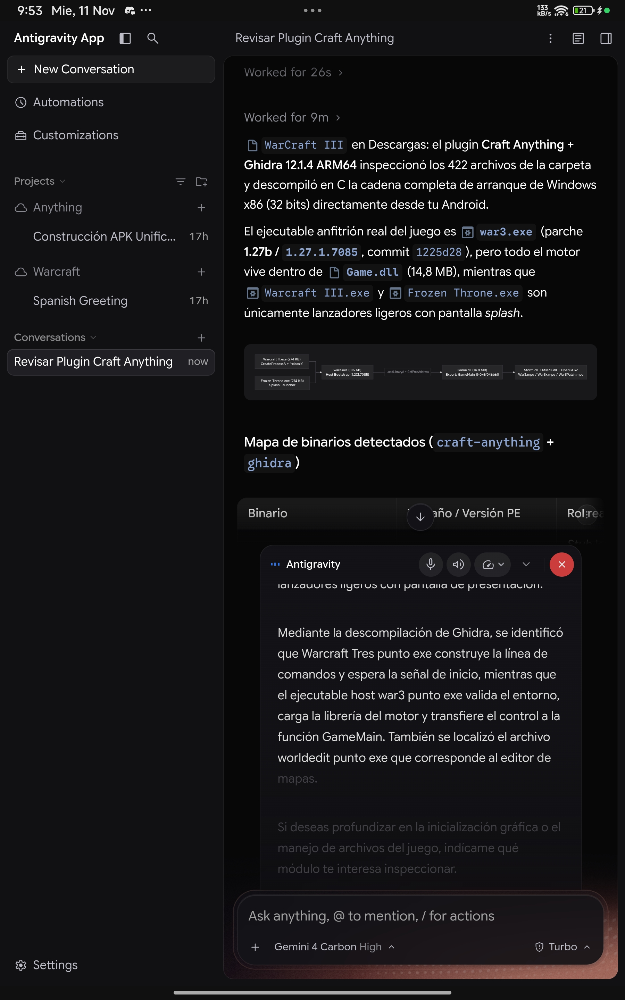
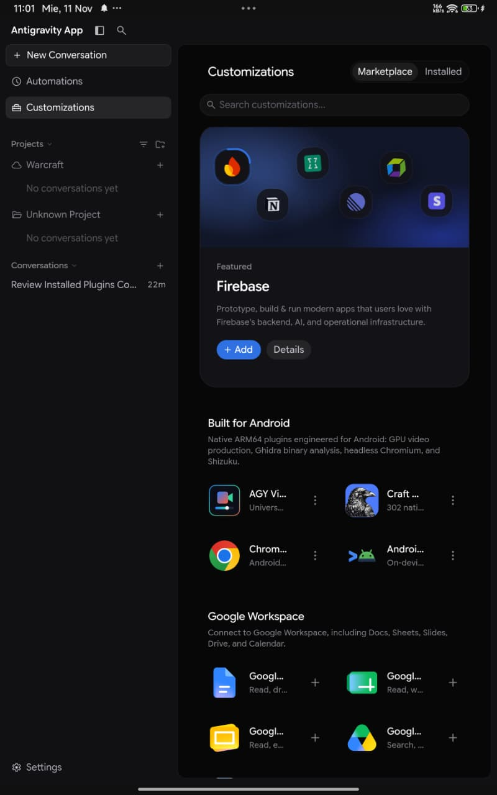
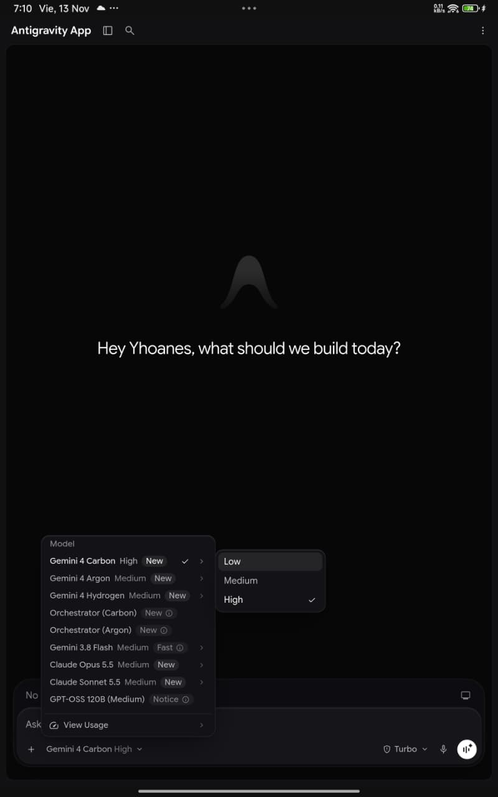
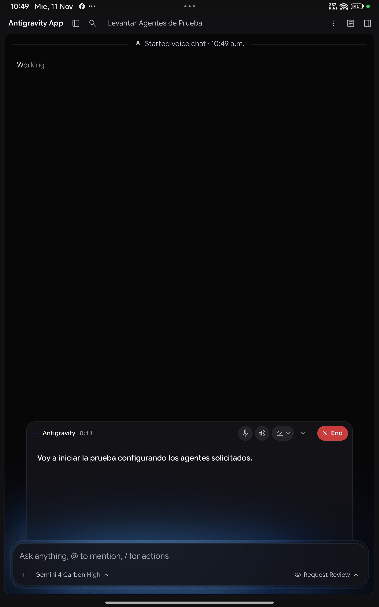

Antigravity for Android
Standalone Google Antigravity autonomous coding IDE and native ARM64 Bionic reverse-engineering APK. Runs directly on physical mobile silicon with the single-binary Rust agy-box runtime, 302 MCP binary tools, headless Ghidra 12.1.4, and Live Voice WebRTC — without PRoot, VNC, or root.
SHA-256: 308c6fed9439c86a26e41acf6de0012d3ccf66d24aafe26fa011cf8b2eb69aae

v2.32.0 native Android workspace running Orchestrator (Carbon/Argon), Gemini 4 Hydrogen, and bidirectional Live Voice.
Why native Bionic execution beats PRoot containers
Most Android ports run desktop Linux distributions inside proot-distro, paying a ptrace syscall translation penalty on every file read and compiler spawn. Antigravity for Android runs directly inside Android userspace.
| Capability | Antigravity for Android (by Yhoanes) | Termux + PRoot Containers | Remote SSH / Thin Clients |
|---|---|---|---|
| Execution layer | Native Android Bionic/Glibc loader + Rust agy-box (398 direct execve symlinks) |
Userspace ptrace syscall interception on every I/O call |
Requires an external PC or paid cloud VM |
| Unrooted terminal sandbox | Binary-patched liblanguage_server.so (zero CLONE_NEWUSER / seccomp crashes) |
Frequent namespace and seccomp failures on Android 12–16 |
Host-dependent |
| Reverse engineering | 302 native ARM64 Rust MCP tools + on-device Bionic ARM64 Ghidra 12.1.4 | Manual compilation; slow JVM startup under PRoot | No local binary/APK inspection |
| Background app switching | < 1s HTTP/2 gRPC-Web stream resume guard (ws-resume.js) |
Browser tab disconnects or stalls in background | Drops SSH / WebSocket tunnel |
| Voice & GPU media | Native WebRTC Live Voice + hardware GPU h264_mediacodec Video Studio |
No hardware MediaCodec or WebAudio mic bridge | High latency |
Measured on-device UFS storage throughput
Multi-pass physical storage benchmark authored and executed directly by the autonomous agent inside Android userspace without virtualization overhead.
Core engineering in v2.32.0
Built upon foundational Bionic host work and heavily expanded by Yhoanes across binary patching, Rust systems tooling, and live OTA plugin delivery.
Single-binary Rust agy-box engine
Linked solely against Android's libc.so and libdl.so (3.52 MiB): 4-thread parallel pkg with pure-Rust TLS, event-driven inotify agy-daemon in 900 KB heap, 112x faster NEON path fixing, and < 55 ms native notifications.
Next-gen multi-model Workbench
Full support for Orchestrator (Carbon/Argon), Gemini 4 Carbon / Argon / Hydrogen, Gemini 3.8 Flash, Claude Opus 5.5 / Sonnet 5.5, and GPT-OSS 120B with touch reasoning-effort submenus.
Two-tier ARM64 reverse engineering
Tier 1 runs 302 Rust MCP tools (Craft Anything) in < 50 MB RAM for instant ELF, PE, Mach-O, APK/DEX, .NET, and WASM triage. Tier 2 installs native Bionic ARM64 Ghidra 12.1.4 (decompile & sleigh).
1-tap OTA updater & ARMv8.0-A compatibility
Checks GitHub Releases directly from Workbench with silent Shizuku pm install or Android PackageInstaller fallback, plus transparent userspace SIGILL emulation (liblse_compat.so) for ARMv8.0-A CPUs.
Real device walkthrough
Captured directly on physical Android ARM64 hardware running Antigravity-v2.32.0.apk.

Craft Anything + Ghidra 12.1.4 ARM64 decompiling Warcraft III PE binaries on Android while explaining call graphs over Live Voice.

Live Built for Android OTA shelf fused directly above Google Workspace inside Customizations → Marketplace.

Touch-patched model and reasoning-effort selector supporting Gemini 4 Carbon/Argon/Hydrogen, Orchestrator, and Claude 5.5.

Multi-agent orchestration spawning parallel research and implementation subagents on mobile.

Native WebRTC/WebAudio microphone pipeline with live floating transcript overlay.
Built for Android plugin catalog
Delivered live over OTA from Yhoanes/antigravity-android-plugins without rebuilding the APK. Tap + inside Customizations → Marketplace to install and auto-enable.
| Plugin | Version | Native ARM64 Capabilities | Optional Toolchain Command |
|---|---|---|---|
| AGY Video Studio | 2.1.3 |
14 MCP tools: hardware GPU h264_mediacodec 16:9 & 9:16 video rendering, neural ES/EN/PT TTS, CapCut drafts & Shizuku automation |
agy-video-setup |
| Craft Anything + Ghidra | 0.4.0-r8 |
302 native ARM64 Rust MCP tools (0 downloads) + on-demand Bionic ARM64 Ghidra 12.1.4 (decompile & sleigh) |
craft-ghidra-setup |
| Game Studio 2D/3D | 1.1.0 |
12 Rust MCP tools: Godot 4 Vulkan Mobile (60–120 FPS) scaffolding, Sprite Atlas + Sobel normal maps, .glb LOD optimizer & Shizuku FPS profiler |
game-studio-setup |
| GitHub (Local ARM64 MCP) | 2.1.1-android |
91 native ARM64 GitHub MCP tools (github-mcp-server without Docker) + 1-command Bionic git/gh OAuth bridge |
github-mcp-setup |
| Chrome DevTools | 1.10.4-android |
Headless ARM64 Chromium (--no-sandbox) MCP launcher + 6 official web performance, LCP & accessibility skills |
pkg install nodejs chromium |
| Android CLI (On-Device) | 1.0.16625373 |
On-device android CLI bridge (layout, screen capture, install, shell via Shizuku rish) |
Start Shizuku app |
| Science (Android Clean) | 1.3.2-android |
28 scientific skills (AlphaFold, ChEMBL, PubMed, RDKit, genomics) cleaned for Android ARM64 | Zero setup required |
Frequently asked questions
Technical answers on installation, kernel compatibility, and native binary analysis.
How is Antigravity for Android different from running Google Antigravity in Termux or PRoot?
Unlike Termux proot-distro or QEMU containers that intercept every Linux syscall in userspace, Antigravity for Android executes directly inside Android Bionic/Glibc userspace with the native Rust agy-box accelerator. It delivers 1,222 MB/s sequential UFS reads, 84,395 random write IOPS, full WebView Workbench v2.32.0 UI, bidirectional WebRTC voice chat, and 1-tap OTA APK updates.
Does Antigravity for Android require root access?
No root access is required. Binary-level patches in liblanguage_server.so bypass Linux CLONE_NEWUSER and seccomp sandbox restrictions on unrooted Android 7.0+ kernels, while liblse_compat.so emulates ARMv8.1 LSE atomics on older ARMv8.0-A devices. Optional Shizuku (rish) support enables silent 1-tap APK upgrades and on-device ADB automation.
Can Antigravity for Android decompile binaries with Ghidra natively on ARM64?
Yes. Installing Craft Anything + Ghidra from the Built for Android Marketplace enables 302 native ARM64 Rust MCP tools immediately with zero extra downloads, plus a 1-command installer (craft-ghidra-setup) that configures OpenJDK 21 and native Android Bionic ARM64 Ghidra 12.1.4 decompile and sleigh binaries.
Which AI models are supported in Antigravity for Android v2.32.0?
Version 2.32.0 supports Orchestrator (Carbon), Orchestrator (Argon), Gemini 4 Carbon, Gemini 4 Argon, Gemini 4 Hydrogen, Gemini 3.8 Flash, Claude Opus 5.5, Claude Sonnet 5.5, and GPT-OSS 120B, with touch-friendly reasoning effort controls and sub-second background HTTP/2 stream re-synchronization.